List of Russian federal subjects by GRDP
(Redirected from List of federal subjects of Russia by GRP)
This article is a list of Russian federal subjects by Gross regional domestic product (GRDP).
{kind=link}
{kind=link}
List
[edit]For easy comparison, GRDP figures are listed in rubles (RUB) and US dollar (USD), converted according to the exchange rate. All GRDP figures in rubles are from the State Statistics of Russian Federation.
| Rank (2022)[1] | Federal subject | Russian name | 2022 (billion RUB) | 2022 (billion USD) |
|---|---|---|---|---|
| – | Российская Федерация | 140,671 |
2054.04 | |
| 1 | Москва | 28,507 |
416.25 | |
| 2 | Санкт-Петербург | 11,166 |
163.04 | |
| 3 | Moscow Oblast | Московская область | 7,721 |
112.74 |
| 4 | Khanty-Mansi Autonomous Okrug | Ханты-Мансийский автономный округ | 6,894 |
100.66 |
| 5 | Yamalo-Nenets Autonomous Okrug | Ямало-Ненецкий автономный округ | 5,350 |
78.12 |
| 6 | 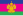 Krasnodar Krai | Краснодарский край | 4,304 |
62.85 |
| 7 | Tatarstan | Татарстан | 4,179 |
61.02 |
| 8 | Sverdlovsk Oblast | Свердловская область | 3,470 |
50.67 |
| 9 | Krasnoyarsk Krai | Красноярский край | 3,319 |
48.46 |
| 10 | 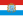 Samara Oblast | Самарская область | 2,378 |
34.72 |
| 11 | Irkutsk Oblast | Иркутская область | 2,357 |
34.42 |
| 12 | Ростовская область | 2,326 |
33.96 | |
| 13 | 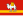 Chelyabinsk Oblast | Челябинская область | 2,300 |
33.58 |
| 14 | Nizhny Novgorod Oblast | Нижегородская область | 2,288 |
33.41 |
| 15 | 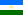 Bashkortostan | Башкортостан | 2,243 |
32.75 |
| 16 | Kemerovo Oblast | Кемеровская область | 2,189 |
31.96 |
| 17 | Sakha Republic | Саха (Якутия) | 2,025 |
29.57 |
| 18 | 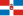 Perm Krai | Пермский край | 2,003 |
29.25 |
| 19 | 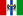 Novosibirsk Oblast | Новосибирская область | 1,939 |
28.31 |
| 20 | 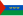 Tyumen Oblast | Тюменская область | 1,720 |
25.12 |
| 21 | 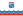 Leningrad Oblast | Ленинградская область | 1,658 |
24.21 |
| 22 | 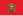 Orenburg Oblast | Оренбургская область | 1,571 |
22.94 |
| 23 | Primorsky Krai | Приморский край | 1,539 |
22.47 |
| 24 | Sakhalin Oblast | Сахалинская область | 1,530 |
22.34 |
| 25 | Voronezh Oblast | Воронежская область | 1,378 |
20.12 |
| 26 | Belgorod Oblast | Белгородская область | 1,311 |
19.14 |
| 27 | Stavropol Krai | Ставропольский край | 1,200 |
17.52 |
| 28 | Saratov Oblast | Саратовская область | 1,194 |
17.43 |
| 29 | 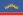 Murmansk Oblast | Мурманская область | 1,149 |
16.78 |
| 30 | Khabarovsk Krai | Хабаровский край | 1,068 |
15.59 |
| 31 | Volgograd Oblast | Волгоградская область | 1,024 |
14.95 |
| 32 | Vologda Oblast | Вологодская область | 1,024 |
14.95 |
| 33 | 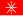 Tula Oblast | Тульская область | 1,004 |
14.66 |
| 34 | Komi Republic | Республика Коми | 976 |
14.25 |
| 35 | Udmurtia | Удмуртия | 966 |
14.11 |
| 36 | 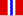 Omsk Oblast | Омская область | 947 |
13.83 |
| 37 | Altai Krai | Алтайский край | 945 |
13.8 |
| 38 | Дагестан | 913 |
13.33 | |
| 39 | Tomsk Oblast | Томская область | 810 |
11.83 |
| 40 | 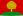 Lipetsk Oblast | Липецкая область | 793 |
11.58 |
| 41 | 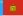 Vladimir Oblast | Владимирская область | 780 |
11.39 |
| 42 | Astrakhan Oblast | Астраханская область | 765 |
11.17 |
| 43 | Yaroslavl Oblast | Ярославская область | 748 |
10.92 |
| 44 | 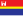 Kaliningrad Oblast | Калининградская область | 738 |
10.78 |
| 45 | Arkhangelsk Oblast | Архангельская область | 700 |
10.22 |
| 46 | 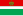 Kaluga Oblast | Калужская область | 694 |
10.13 |
| 47 | 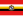 Kursk Oblast | Курская область | 665 |
9.71 |
| 48 | 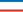 Republic of Crimea | Республика Крым | 656 |
9.58 |
| 49 | 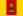 Tver Oblast | Тверская область | 629 |
9.18 |
| 50 | 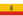 Ryazan Oblast | Рязанская область | 619 |
9.04 |
| 51 | Amur Oblast | Амурская область | 604 |
8.82 |
| 52 | Penza Oblast | Пензенская область | 593 |
8.66 |
| 53 | Ulyanovsk Oblast | Ульяновская область | 589 |
8.6 |
| 54 | Kirov Oblast | Кировская область | 555 |
8.1 |
| 55 | Bryansk Oblast | Брянская область | 549 |
8.02 |
| 56 | 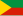 Zabaykalsky Krai | Забайкальский край | 547 |
7.99 |
| 57 | 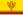 Chuvashia | Чувашия | 502 |
7.33 |
| 58 | Nenets Autonomous Okrug | Ненецкий автономный округ | 488 |
7.13 |
| 59 | Smolensk Oblast | Смоленская область | 483 |
7.05 |
| 60 | Tambov Oblast | Тамбовская область | 474 |
6.92 |
| 61 | 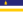 Buryatia | Бурятия | 447 |
6.97 |
| 62 | 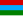 Karelia | Карелия | 391 |
5.71 |
| 63 | Novgorod Oblast | Новгородская область | 381 |
5.56 |
| 64 | Oryol Oblast | Орловская область | 370 |
5.4 |
| 65 | Ivanovo Oblast | Ивановская область | 364 |
5.32 |
| 66 | Kamchatka Krai | Камчатский край | 357 |
5.21 |
| 67 | 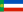 Khakassia | Хакасия | 349 |
5.1 |
| 68 | 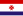 Mordovia | Мордовия | 342 |
4.99 |
| 69 | Kurgan Oblast | Курганская область | 340 |
4.96 |
| 70 | Magadan Oblast | Магаданская область | 316 |
4.61 |
| 71 | Chechnya | Чечня | 315 |
4.6 |
| 72 | Kostroma Oblast | Костромская область | 276 |
4.03 |
| 73 | Mari El | Марий Эл | 262 |
3.83 |
| 74 | Кабардино-Балкария | 259 |
3.78 | |
| 75 | 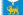 Pskov Oblast | Псковская область | 258 |
3.77 |
| 76 | Sevastopol | Севастополь | 230 |
3.36 |
| 77 | Северная Осетия — Алания | 216 |
3.15 | |
| 78 | Adygea | Адыгея | 197 |
2.88 |
| 79 | Chukotka Autonomous Okrug | Чукотский автономный округ | 141 |
2.06 |
| 80 | 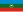 Karachay-Cherkessia | Карачаево-Черкесия | 126 |
1.84 |
| 81 | Kalmykia | Калмыкия | 119 |
1.74 |
| 82 | Tuva | Тыва | 108 |
1.58 |
| 83 | Altai Republic | Республика Алтай | 91 |
1.33 |
| 84 | Ingushetia | Ингушетия | 82 |
1.2 |
| 85 | Jewish Autonomous Oblast | Еврейская автономная область | 81 |
1.18 |
Historical data
[edit]| Rank (2008) [1] | Federal Subjects | Russian Name | 2008 (RUB) | 2008 (USD) | 2007 (RUB) | 2007 (USD) | 2005 (RUB) | 2005 (USD) |
|---|---|---|---|---|---|---|---|---|
| – | Russia | Россия | 37,062,116 | 1,491,260 | 30,641,410 | 1,197,825 | 19,889,584 | 703,195 |
| 1 | Moscow | Москва | 8,441,206 | 339,647 | 6,731,189 | 263,134 | 4,135,155 | 146,199 |
| 2 | Tyumen Oblast | Тюменская область | 3,143,607 | 126,489 | 2,785,336 | 108,884 | 2,215,584 | 78,332 |
| 3 | Moscow Oblast | Московская область | 1,685,489 | 67,819 | 1,306,077 | 51,057 | 708,062 | 25,034 |
| 4 | Saint Petersburg | Санкт-Петербург | 1,420,830 | 57,170 | 1,109,297 | 43,364 | 666,393 | 23,560 |
| 5 | Sverdlovsk Oblast | Свердловская область | 944,408 | 38,000 | 825,036 | 32,252 | 475,576 | 16,814 |
| 6 | Tatarstan | Татарстан | 923,206 | 37,147 | 770,730 | 30,129 | 482,759 | 17,068 |
| 7 | Krasnodar Krai | Краснодарский край | 808,704 | 32,540 | 655,298 | 25,617 | 372,930 | 13,185 |
| 8 | Bashkortostan | Башкортостан | 749,481 | 30,157 | 601,310 | 23,506 | 381,647 | 13,493 |
| 9 | Krasnoyarsk Krai | Красноярский край | 740,233 | 29,785 | 734,414 | 28,710 | 439,737 | 15,547 |
| 10 | Samara Oblast | Самарская область | 706,514 | 28,428 | 600,368 | 23,469 | 401,812 | 14,206 |
| 11 | Chelyabinsk Oblast | Челябинская область | 664,974 | 26,756 | 582,945 | 22,788 | 349,957 | 12,373 |
| 12 | Perm Krai | Пермский край | 609,230 | 24,513 | 480,023 | 18,765 | 327,273 | 11,571 |
| 13 | Nizhny Novgorod Oblast | Нижегородская область | 597,988 | 24,061 | 473,909 | 18,526 | 299,724 | 10,597 |
| 14 | Rostov Oblast | Ростовская область | 576,386 | 23,192 | 453,061 | 17,711 | 263,052 | 9,300 |
| 15 | Kemerovo Oblast | Кемеровская область | 575,942 | 23,174 | 444,352 | 17,371 | 295,378 | 10,443 |
| 16 | Novosibirsk Oblast | Новосибирская область | 460,087 | 18,512 | 382,186 | 14,940 | 235,382 | 8,322 |
| 17 | Irkutsk Oblast | Иркутская область | 456,706 | 18,376 | 403,031 | 15,755 | 258,096 | 9,125 |
| 18 | Volgograd Oblast | Волгоградская область | 431,748 | 17,372 | 333,856 | 13,051 | 203,232 | 7,185 |
| 19 | Orenburg Oblast | Оренбургская область | 425,045 | 17,102 | 375,073 | 14,662 | 213,138 | 7,536 |
| 20 | Voronezh Oblast | Воронежская область | 268,842 | 10,817 | 223,751 | 8,747 | 135,686 | 4,797 |
| 21 | Omsk Oblast | Омская область | 352,938 | 14,201 | 301,803 | 11,798 | 220,686 | 7,802 |
| 22 | Sakhalin Oblast | Сахалинская область | 335,878 | 13,515 | 286,049 | 11,182 | 121,014 | 4,278 |
| 23 | Saratov Oblast | Саратовская область | 330,564 | 13,301 | 261,683 | 10,230 | 170,931 | 6,043 |
| 24 | Primorsky Krai | Приморский край | 319,360 | 12,850 | 263,272 | 10,292 | 186,623 | 6,598 |
| 25 | Yaroslavl Oblast | Ярославская область | 319,071 | 12,838 | 178,846 | 6,991 | 114,409 | 4,045 |
| 26 | Sakha | Якутия | 304,987 | 12,272 | 246,469 | 9,635 | 183,027 | 6,471 |
| 27 | Vologda Oblast | Вологодская область | 298,126 | 11,996 | 243,948 | 9,536 | 193,966 | 6,858 |
| 28 | Arkhangelsk Oblast | Архангельская область | 298,112 | 11,995 | 286,862 | 11,214 | 166,433 | 5,884 |
| 29 | Komi | Республика Коми | 295,614 | 11,895 | 242,431 | 9,477 | 171,307 | 6,057 |
| 30 | Khabarovsk Krai | Хабаровский край | 289,322 | 11,641 | 228,666 | 8,939 | 133,587 | 4,723 |
| 31 | Altai Krai | Алтайский край | 275,084 | 11,068 | 221,119 | 8,644 | 146,569 | 5,182 |
| 32 | Belgorod Oblast | Белгородская область | 273,213 | 10,993 | 232,640 | 9,094 | 161,194 | 5,699 |
| 33 | Leningrad Oblast | Ленинградская область | 383,892 | 15,447 | 312,405 | 12,212 | 205,417 | 7,263 |
| 34 | Tomsk Oblast | Томская область | 263,172 | 10,589 | 213,774 | 8,357 | 145,194 | 5,133 |
| 35 | Stavropol Krai | Ставропольский край | 251,726 | 10,129 | 216,059 | 8,446 | 159,579 | 5,642 |
| 36 | Lipetsk Oblast | Липецкая область | 240,316 | 9,670 | 205,824 | 8,046 | 139,995 | 4,950 |
| 37 | Tula Oblast | Тульская область | 230,606 | 9,279 | 176,866 | 6,914 | 116,221 | 4,109 |
| 38 | Murmansk Oblast | Мурманская область | 219,952 | 8,850 | 189,980 | 7,427 | 131,252 | 4,640 |
| 39 | Udmurt | Удмуртия | 215,913 | 8,688 | 192,177 | 7,513 | 132,870 | 4,698 |
| 40 | Dagestan | Дагестан | 211,260 | 8,500 | 166,721 | 6,517 | 90,443 | 3,198 |
| 41 | Tver Oblast | Тверская область | 196,952 | 7,925 | 158,883 | 6,211 | 96,897 | 3,426 |
| 42 | Ulyanovsk Oblast | Ульяновская область | 181,716 | 7,312 | 145,921 | 5,704 | 81,838 | 2,893 |
| 43 | Kaliningrad Oblast | Калининградская область | 176,257 | 7,092 | 148,294 | 5,797 | 86,927 | 3,073 |
| 44 | Kursk Oblast | Курская область | 167,991 | 6,759 | 132,107 | 5,164 | 86,625 | 3,063 |
| 45 | Chuvash | Чувашия | 157,620 | 6,342 | 121,904 | 4,765 | 69,392 | 2,453 |
| 46 | Kaluga Oblast | Калужская область | 153,253 | 6,166 | 114,449 | 4,474 | 70,954 | 2,509 |
| 47 | Ulyanovsk Oblast | Ульяновская область | 151,134 | 6,081 | 126,714 | 4,953 | 80,584 | 2,849 |
| 48 | Kirov Oblast | Кировская область | 150,883 | 6,071 | 120,239 | 4,700 | 79,801 | 2,821 |
| 49 | Ryazan Oblast | Рязанская область | 149,710 | 6,024 | 126,103 | 4,930 | 84,383 | 2,983 |
| 50 | Astrakhan Oblast | Астраханская область | 147,062 | 5,917 | 105,063 | 4,107 | 70,128 | 2,479 |
| 51 | Penza Oblast | Пензенская область | 145,127 | 5,839 | 119,905 | 4,687 | 74,363 | 2,629 |
| 52 | Zabaykalsky Krai | Забайкальский край | 140,866 | 5,668 | 113,230 | 4,426 | 69,647 | 2,462 |
| 53 | Amur Oblast | Амурская область | 136,784 | 5,504 | 114,282 | 4,467 | 76,861 | 2,717 |
| 54 | Bryansk Oblast | Брянская область | 127,020 | 5,111 | 106,144 | 4,149 | 66,692 | 2,358 |
| 55 | Buryatia | Бурятия | 126,830 | 5,103 | 109,554 | 4,283 | 74,913 | 2,649 |
| 56 | Tambov Oblast | Тамбовская область | 123,220 | 4,958 | 107,596 | 4,206 | 63,615 | 2,249 |
| 57 | Smolensk Oblast | Смоленская область | 121,564 | 4,891 | 99,141 | 3,876 | 65,526 | 2,317 |
| 58 | Karelia | Карелия | 117,217 | 4,716 | 104,623 | 4,090 | 77,125 | 2,727 |
| 59 | Novgorod Oblast | Новгородская область | 115,479 | 4,647 | 87,560 | 3,423 | 63,848 | 2,257 |
| 60 | Kurgan Oblast | Курганская область | 106,442 | 4,283 | 82,731 | 3,234 | 50,246 | 1,776 |
| 61 | Oryol Oblast | Орловская область | 95,434 | 3,840 | 79,791 | 3,119 | 53,182 | 1,880 |
| 62 | Mordovia | Мордовия | 94,582 | 3,806 | 77,003 | 3,010 | 44,267 | 1,565 |
| 63 | Nenets Autonomous Okrug | Ненецкий автономный округ | 91,523 | 3,683 | 98,374 | 3,846 | 44,718 | 1,581 |
| 64 | Ivanovo Oblast | Ивановская область | 86,084 | 3,464 | 75,785 | 2,963 | 44,415 | 1,570 |
| 65 | Kostroma Oblast | Костромская область | 81,096 | 3,263 | 68,579 | 2,681 | 44,685 | 1,580 |
| 66 | Kamchatka Krai | Камчатский край | 78,248 | 3,148 | 67,918 | 2,655 | 43,974 | 1,555 |
| 67 | Khakassia | Хакасия | 74,088 | 2,981 | 64,029 | 2,503 | 41,728 | 1,475 |
| 68 | Pskov | Псковская область | 73,448 | 2,955 | 63,108 | 2,467 | 40,583 | 1,435 |
| 69 | Mari El | Марий Эл | 67,400 | 2,712 | 56,391 | 2,204 | 33,351 | 1,179 |
| 70 | Chechnya | Чечня | 65,624 | 2,640 | 46,782 | 1,829 | 22,899 | 810 |
| 71 | Kabardino-Balkaria | Кабардино-Балкария | 58,629 | 2,359 | 50,385 | 1,970 | 36,833 | 1,302 |
| 72 | North Ossetia–Alania | Северная Осетия | 57,868 | 2,328 | 53,668 | 2,098 | 31,182 | 1,102 |
| 73 | Magadan Oblast | Магаданская область | 41,949 | 1,688 | 35,424 | 1,385 | 27,168 | 961 |
| 74 | Adygea | Адыгея | 37,236 | 1,498 | 29,158 | 1,140 | 17,029 | 602 |
| 75 | Karachay–Cherkessia | Карачаево-Черкесия | 35,257 | 1,419 | 28,239 | 1,104 | 16,724 | 591 |
| 76 | Chukotka | Чукотский автономный округ | 30,699 | 1,235 | 21,222 | 830 | 12,355 | 437 |
| 77 | Jewish | Еврейская автономная область | 26,695 | 1,074 | 24,607 | 962 | 14,204 | 502 |
| 78 | Tuva | Тыва | 24,409 | 982 | 19,776 | 773 | 11,663 | 412 |
| 79 | Kalmykia | Калмыкия | 20,792 | 837 | 16,651 | 651 | 9,686 | 342 |
| 80 | Ingushetia | Ингушетия | 19,200 | 773 | 14,835 | 580 | 7,419 | 262 |
| 81 | Altai | Республика Алтай | 18,783 | 756 | 15,318 | 599 | 8,806 | 311 |
Notes
- Annual Average Exchange: According to UN country historical GDP DATA, Russian GDP was RUB 21,625,372 millions or US$764,568 million in 2005, the average exchange rate is RUB 28.2844 per USD; GDP 2007 was RUB 33,258,143 million or US$1,300,119 million, the average exchange rate is RUB 25.5808 per USD in 2007; GDP 2008 was RUB 41,444,667 million or US$1,667,600 million, the average exchange rate is RUB 24.8529 per USD in 2008.
See also
[edit]References
[edit]- ^ a b Валовой региональный продукт по субъектам Российской Федерации в 1998-2022 гг., rosstat.gov.ru
External links
[edit]- Gross Regional Product by federal subjects of Russian Federation for 1998-2007 Archived 2017-08-05 at the Wayback Machine (in Russian)
- Gross regional product by region, Russian Federation (gross value added at basic prices) 1998-2009
| History |
|
|---|---|
| Natural resources | |
| Industry | |
| Infrastructure | |
| Services | |
| Finance |
|
| Regional economies | |
| Economic regions | |
| Other | |